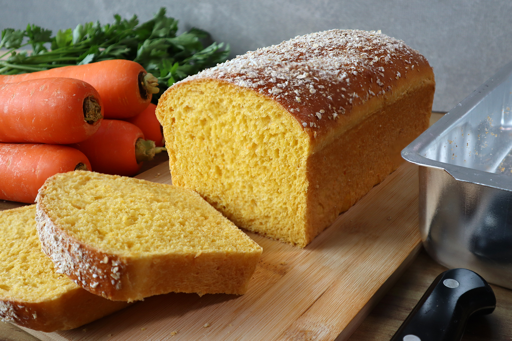

Receita 1
Pão com Rama de Cenoura

Ingredientes
- • 2 tabletes de fermento
biológico (fresco)
- • ½ xícara (chá)
de açúcar
- • 1 ½ xícara (chá)
de leite morno
- • 1 xícara (chá)
de rama de cenoura
- • 1 cenoura ralada
- • 1 ovo
- • ½ xícara (chá)
de óleo
- • 1 colher (chá) de sal
- • 500 g de farinha
de trigo
Modo de preparo
- Coloque os ingredientes líquidos, o
- fermento, o açúcar, o óleo e o sal no
- liquidificador e bata. Em seguida,
- coloque em uma tigela a farinha de
- trigo, a cenoura ralada, as ramas e
- a mistura batida. Misture bem com
- uma colher até formar uma massa
- lisa. Unte uma fôrma de bolo inglês
- com óleo ou margarina e farinha,
- despeje a massa e deixe crescer
- (cerca de 30 minutos em dias
- quentes e 1 hora em dias frios).
- Leve para assar em forno a 170 °C
- por 35 minutos.
Voltar